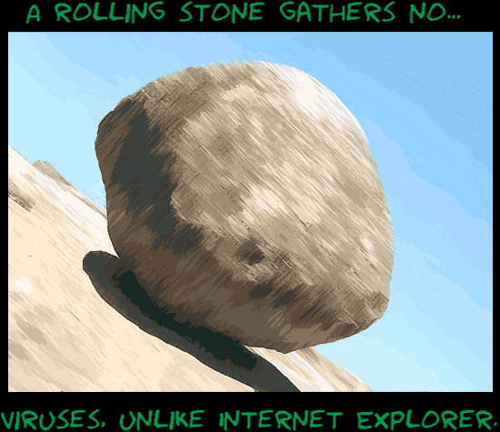

Comic JK 355
When I Feel Like It
⇤
<
?
>
⇥

⇤
<
?
>
⇥
Forum
.
RSS
.
Digg
.
Facebook
.
Reddit
.
Twitter
.
Stumbleupon
Enter your thoughts on number 355 here. Please, no spamming, trolling, or phreaking. @Title-text: What about Italian singers? >While they may not be virus collectors, are dramatic singing styles really clean? >What about colour-changing lizards? >>And big cats and spiders? >>>Sifn't use links for general browsing >>>>Don't forget the lynx! >>>>>The rock looks like its actually in motion - good work :) >>>>>>That's because it is. It's on its way to level a small town full of TNT. >>>>Don't forget journey pathfinders! >>>>>>>*ahem* Flying sea mammals = pretty darn clean. >>>>>Never gotten a virus from elinks Did you know that if you start a rolling stone - if you start it up, if you start it up it never stops, never stops, it never never never stops... HAHA FIRE! HAHA FOX! HAHA CHROME! AS IN GOOGLE CHROOME! OHHHHH I GET IT! ITS A JOKE! ITS FUNNYYYYYYY =D >LOL yes it is But on the subject of Chrome - what's the feeling on the notion it potentially compromises user privacy by "reporting too much data home to Google"? >Google released all the code, so it's easy to make a version of Chrome which doesn't report to google--for instance, SRWare Iron. >>while you and I may call that "easy", most people would not... ;) >>>It doesn't actually report *any* data if you don't want it to. Plus, of course, it's entirely anonymous. I report to Google because it's the least I could do. I don't get it. Could someone explain? >someone could - but first you may need to specify which "it" you don't get... >>What does the rolling stone refer to? >>>it's a metaphorical rolling stone - to allow the cartoonist to make ( arguably justified ) criticism of IE >>>>The reference is the saying "A rolling stone gathers no moss", like wise a decent browser gathers no viruses.